library(dplyr)
library(ggplot2)
library(skimr) # 快速数据摘要
library(DataExplorer) # 自动化EDA报告
library(corrplot) # 相关矩阵可视化
theme_set(theme_bw(base_size = 12))探索性数据分析 (EDA)
R语言方法
数据分析
EDA
EDA 简介
探索性数据分析（Exploratory Data Analysis, EDA）是理解数据特征、发现模式和异常的关键步骤，为后续分析奠定基础。
EDA 核心目标
| 目标 | 关注点 |
|---|---|
| 了解数据结构 | 变量类型、维度、完整性 |
| 描述分布特征 | 集中趋势、离散程度、偏态 |
| 发现变量关系 | 相关性、分组差异 |
| 识别异常值 | 离群点、数据错误 |
安装与加载
第一部分：数据概览
基础检查
# 使用内置数据集
data(mtcars)
df <- mtcars
# 维度
dim(df)[1] 32 11# 结构
str(df)'data.frame': 32 obs. of 11 variables:
$ mpg : num 21 21 22.8 21.4 18.7 18.1 14.3 24.4 22.8 19.2 ...
$ cyl : num 6 6 4 6 8 6 8 4 4 6 ...
$ disp: num 160 160 108 258 360 ...
$ hp : num 110 110 93 110 175 105 245 62 95 123 ...
$ drat: num 3.9 3.9 3.85 3.08 3.15 2.76 3.21 3.69 3.92 3.92 ...
$ wt : num 2.62 2.88 2.32 3.21 3.44 ...
$ qsec: num 16.5 17 18.6 19.4 17 ...
$ vs : num 0 0 1 1 0 1 0 1 1 1 ...
$ am : num 1 1 1 0 0 0 0 0 0 0 ...
$ gear: num 4 4 4 3 3 3 3 4 4 4 ...
$ carb: num 4 4 1 1 2 1 4 2 2 4 ...# 前几行
head(df) mpg cyl disp hp drat wt qsec vs am gear carb
Mazda RX4 21.0 6 160 110 3.90 2.620 16.46 0 1 4 4
Mazda RX4 Wag 21.0 6 160 110 3.90 2.875 17.02 0 1 4 4
Datsun 710 22.8 4 108 93 3.85 2.320 18.61 1 1 4 1
Hornet 4 Drive 21.4 6 258 110 3.08 3.215 19.44 1 0 3 1
Hornet Sportabout 18.7 8 360 175 3.15 3.440 17.02 0 0 3 2
Valiant 18.1 6 225 105 2.76 3.460 20.22 1 0 3 1使用 skimr
# 快速全面摘要
skim(df)| Name | df |
| Number of rows | 32 |
| Number of columns | 11 |
| _______________________ | |
| Column type frequency: | |
| numeric | 11 |
| ________________________ | |
| Group variables | None |
Variable type: numeric
| skim_variable | n_missing | complete_rate | mean | sd | p0 | p25 | p50 | p75 | p100 | hist |
|---|---|---|---|---|---|---|---|---|---|---|
| mpg | 0 | 1 | 20.09 | 6.03 | 10.40 | 15.43 | 19.20 | 22.80 | 33.90 | ▃▇▅▁▂ |
| cyl | 0 | 1 | 6.19 | 1.79 | 4.00 | 4.00 | 6.00 | 8.00 | 8.00 | ▆▁▃▁▇ |
| disp | 0 | 1 | 230.72 | 123.94 | 71.10 | 120.83 | 196.30 | 326.00 | 472.00 | ▇▃▃▃▂ |
| hp | 0 | 1 | 146.69 | 68.56 | 52.00 | 96.50 | 123.00 | 180.00 | 335.00 | ▇▇▆▃▁ |
| drat | 0 | 1 | 3.60 | 0.53 | 2.76 | 3.08 | 3.70 | 3.92 | 4.93 | ▇▃▇▅▁ |
| wt | 0 | 1 | 3.22 | 0.98 | 1.51 | 2.58 | 3.33 | 3.61 | 5.42 | ▃▃▇▁▂ |
| qsec | 0 | 1 | 17.85 | 1.79 | 14.50 | 16.89 | 17.71 | 18.90 | 22.90 | ▃▇▇▂▁ |
| vs | 0 | 1 | 0.44 | 0.50 | 0.00 | 0.00 | 0.00 | 1.00 | 1.00 | ▇▁▁▁▆ |
| am | 0 | 1 | 0.41 | 0.50 | 0.00 | 0.00 | 0.00 | 1.00 | 1.00 | ▇▁▁▁▆ |
| gear | 0 | 1 | 3.69 | 0.74 | 3.00 | 3.00 | 4.00 | 4.00 | 5.00 | ▇▁▆▁▂ |
| carb | 0 | 1 | 2.81 | 1.62 | 1.00 | 2.00 | 2.00 | 4.00 | 8.00 | ▇▂▅▁▁ |
使用 DataExplorer
# 数据概览
introduce(df) rows columns discrete_columns continuous_columns all_missing_columns
1 32 11 0 11 0
total_missing_values complete_rows total_observations memory_usage
1 0 32 352 5928# 可视化数据类型
plot_intro(df)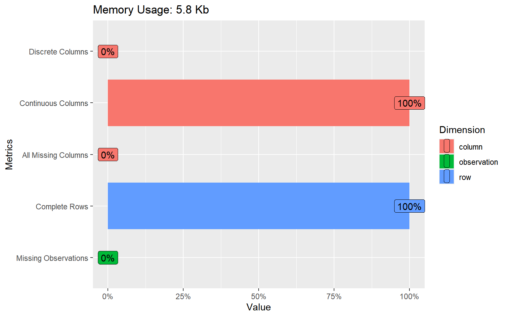
第二部分：单变量分析
数值变量分布
# 直方图
ggplot(df, aes(x = mpg)) +
geom_histogram(bins = 15, fill = "#4f46e5", color = "white") +
labs(title = "MPG 分布", x = "油耗 (MPG)", y = "频数")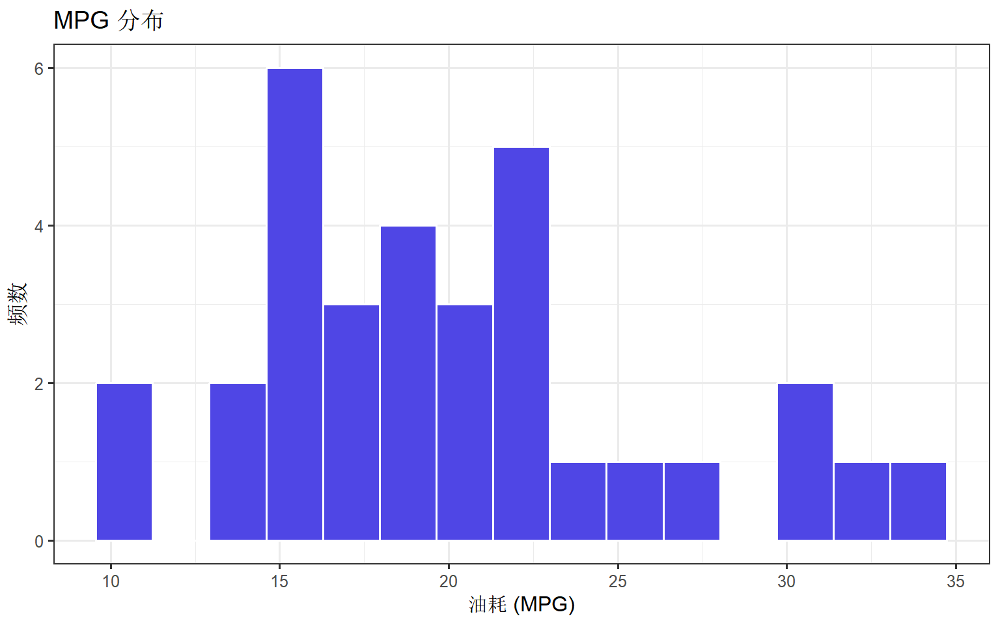
# 密度图
ggplot(df, aes(x = mpg)) +
geom_density(fill = "#4f46e5", alpha = 0.5) +
geom_rug()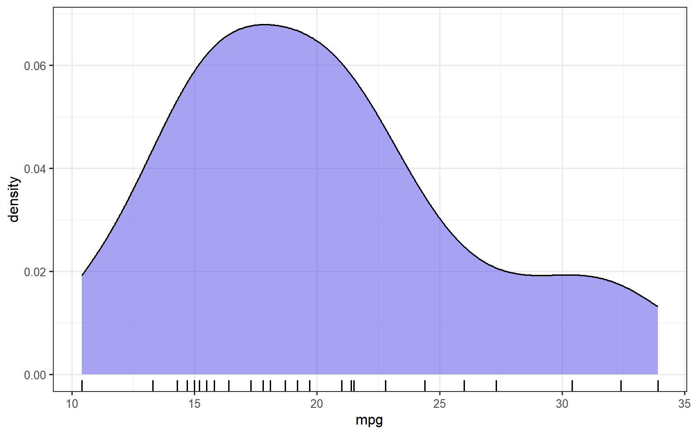
# 批量直方图
plot_histogram(df)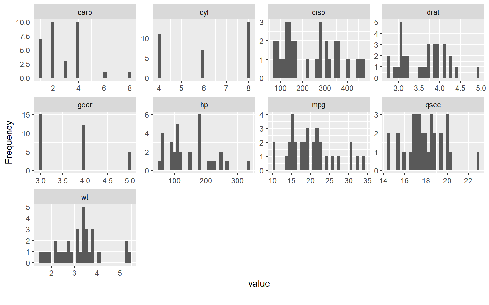
分类变量分布
# 柱状图
df$cyl <- as.factor(df$cyl)
df$am <- factor(df$am, labels = c("自动", "手动"))
ggplot(df, aes(x = cyl)) +
geom_bar(fill = "#10b981") +
labs(title = "气缸数分布", x = "气缸数", y = "数量")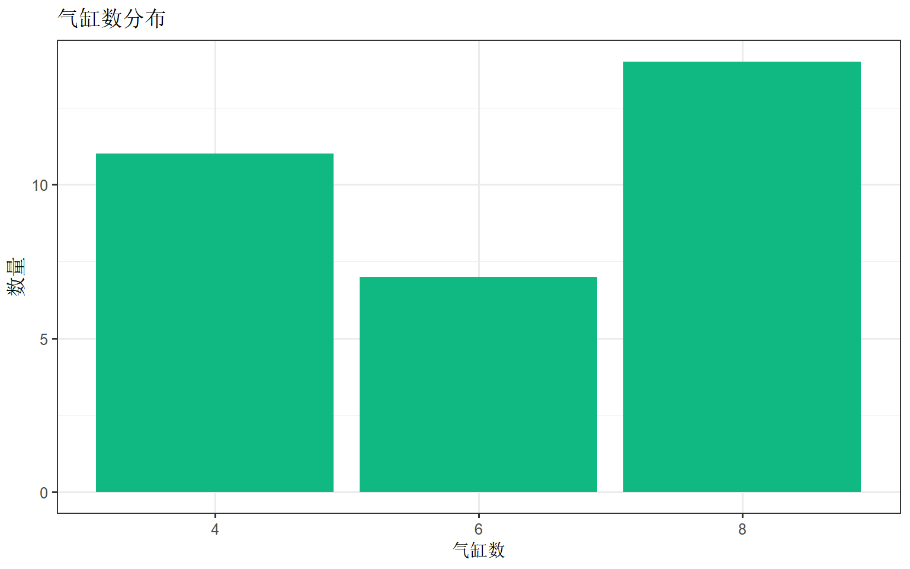
描述性统计
# 汇总统计
df %>%
select(mpg, hp, wt, qsec) %>%
summary() mpg hp wt qsec
Min. :10.40 Min. : 52.0 Min. :1.513 Min. :14.50
1st Qu.:15.43 1st Qu.: 96.5 1st Qu.:2.581 1st Qu.:16.89
Median :19.20 Median :123.0 Median :3.325 Median :17.71
Mean :20.09 Mean :146.7 Mean :3.217 Mean :17.85
3rd Qu.:22.80 3rd Qu.:180.0 3rd Qu.:3.610 3rd Qu.:18.90
Max. :33.90 Max. :335.0 Max. :5.424 Max. :22.90 第三部分：双变量分析
数值 vs 数值
# 散点图
ggplot(df, aes(x = wt, y = mpg)) +
geom_point(color = "#4f46e5", size = 3, alpha = 0.7) +
geom_smooth(method = "lm", color = "#ef4444") +
labs(title = "重量与油耗的关系")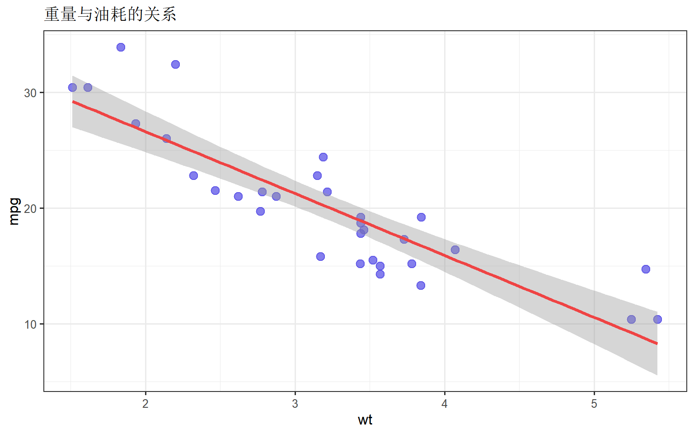
# 散点图矩阵
pairs(df[, c("mpg", "hp", "wt", "qsec")],
pch = 19,
col = "#4f46e5"
)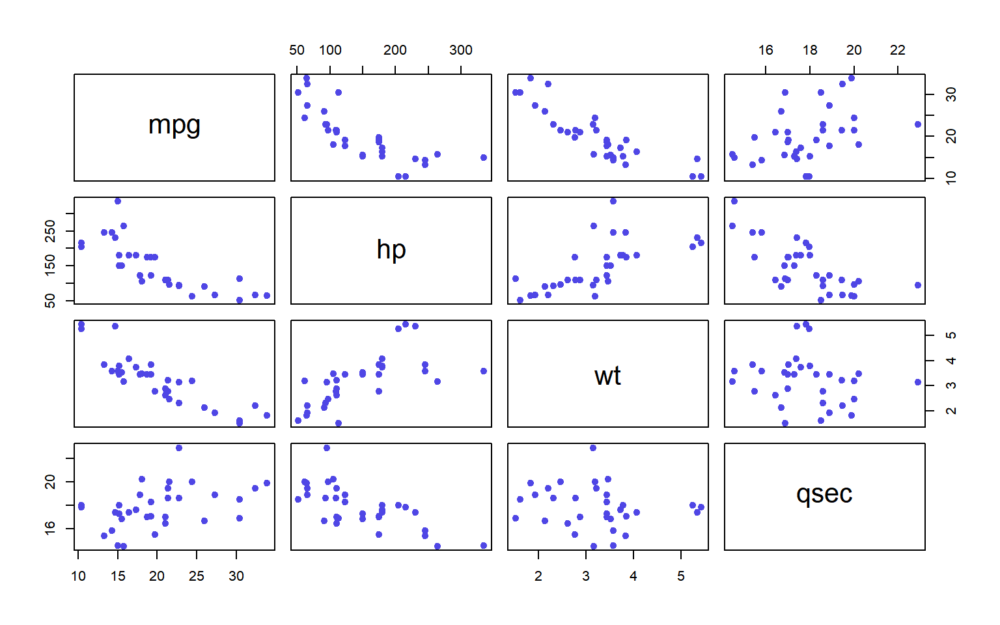
数值 vs 分类
# 分组箱线图
ggplot(df, aes(x = cyl, y = mpg, fill = cyl)) +
geom_boxplot() +
scale_fill_brewer(palette = "Set2") +
labs(title = "不同气缸数的油耗分布")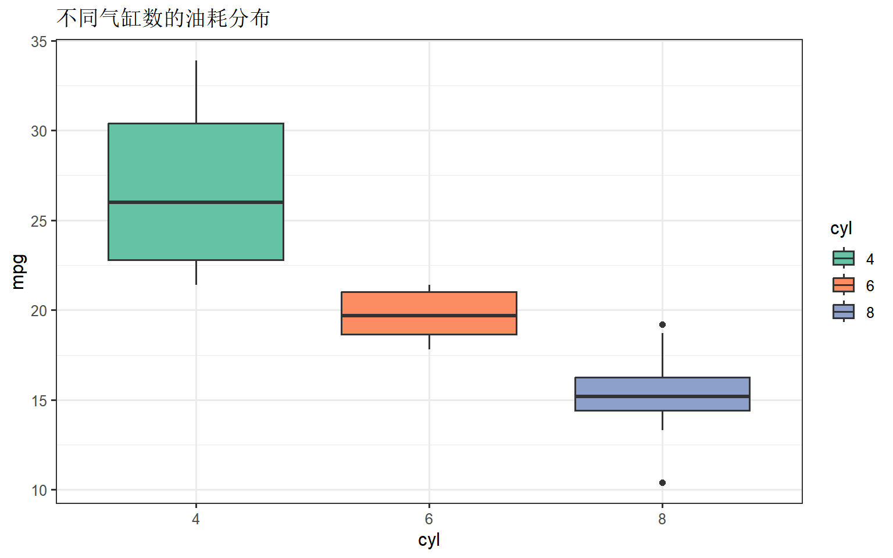
# 小提琴图 + 点图
ggplot(df, aes(x = cyl, y = mpg)) +
geom_violin(fill = "#4f46e5", alpha = 0.3) +
geom_jitter(width = 0.1, alpha = 0.7)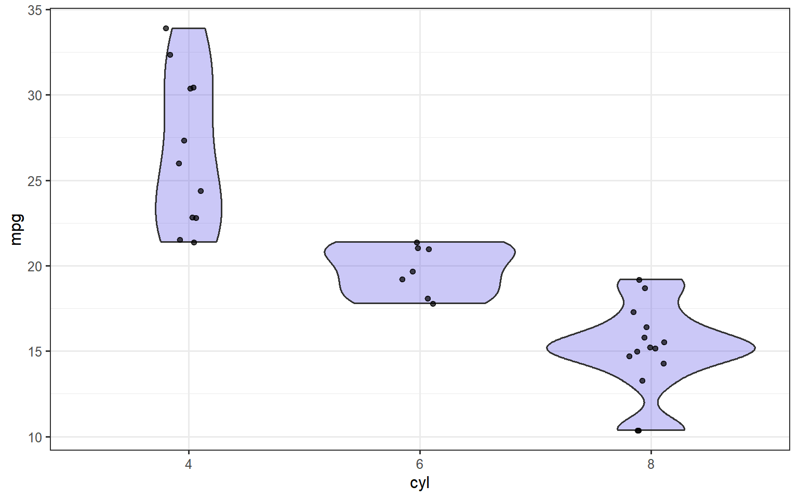
分类 vs 分类
# 交叉表
table(df$cyl, df$am)
自动 手动
4 3 8
6 4 3
8 12 2# 堆叠柱状图
ggplot(df, aes(x = cyl, fill = am)) +
geom_bar(position = "dodge") +
scale_fill_manual(values = c("#4f46e5", "#10b981")) +
labs(title = "变速箱类型按气缸数分布")
第四部分：相关分析
相关系数矩阵
# 数值变量相关
numeric_vars <- df %>% select(where(is.numeric))
cor_matrix <- cor(numeric_vars)
round(cor_matrix, 2) mpg disp hp drat wt qsec vs gear carb
mpg 1.00 -0.85 -0.78 0.68 -0.87 0.42 0.66 0.48 -0.55
disp -0.85 1.00 0.79 -0.71 0.89 -0.43 -0.71 -0.56 0.39
hp -0.78 0.79 1.00 -0.45 0.66 -0.71 -0.72 -0.13 0.75
drat 0.68 -0.71 -0.45 1.00 -0.71 0.09 0.44 0.70 -0.09
wt -0.87 0.89 0.66 -0.71 1.00 -0.17 -0.55 -0.58 0.43
qsec 0.42 -0.43 -0.71 0.09 -0.17 1.00 0.74 -0.21 -0.66
vs 0.66 -0.71 -0.72 0.44 -0.55 0.74 1.00 0.21 -0.57
gear 0.48 -0.56 -0.13 0.70 -0.58 -0.21 0.21 1.00 0.27
carb -0.55 0.39 0.75 -0.09 0.43 -0.66 -0.57 0.27 1.00相关矩阵可视化
corrplot(cor_matrix,
method = "color",
type = "upper",
addCoef.col = "black",
tl.col = "black",
tl.srt = 45,
diag = FALSE
)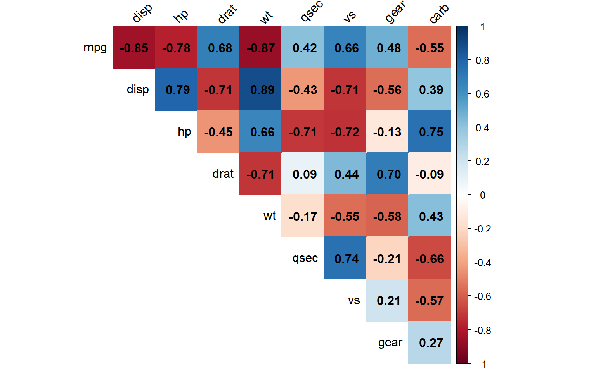
# DataExplorer 方式
plot_correlation(numeric_vars)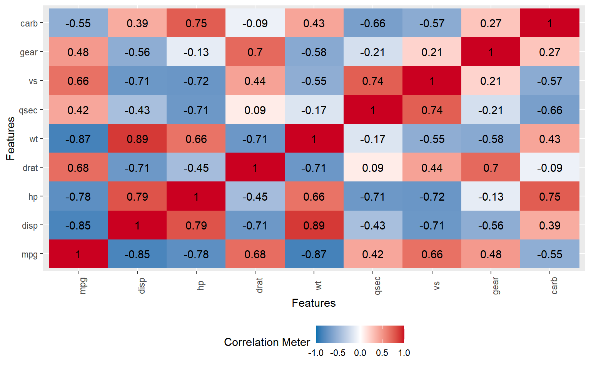
第五部分：异常值检测
箱线图法
# 识别异常值
ggplot(df, aes(y = hp)) +
geom_boxplot(fill = "#4f46e5", alpha = 0.7) +
labs(title = "马力分布与异常值")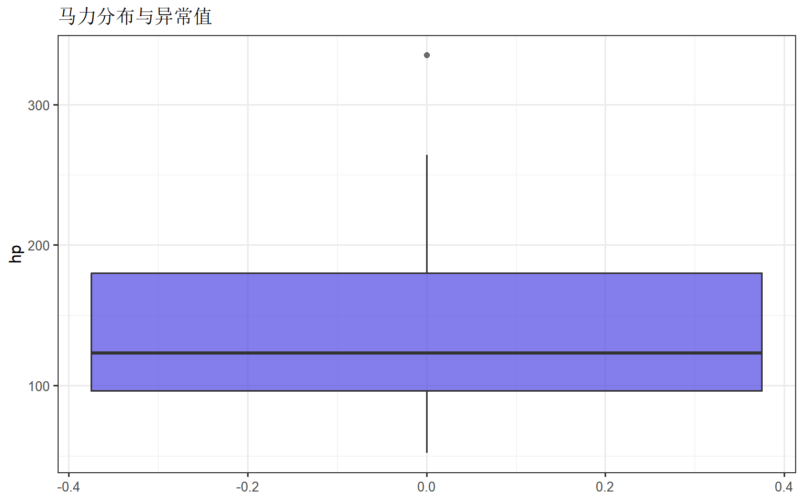
# 统计异常值
identify_outliers <- function(x) {
Q1 <- quantile(x, 0.25)
Q3 <- quantile(x, 0.75)
IQR <- Q3 - Q1
lower <- Q1 - 1.5 * IQR
upper <- Q3 + 1.5 * IQR
which(x < lower | x > upper)
}
outlier_idx <- identify_outliers(df$hp)
cat("异常值索引:", outlier_idx, "\n")异常值索引: 31 cat("异常值:", df$hp[outlier_idx])异常值: 335Z-score 法
df$hp_zscore <- scale(df$hp)
sum(abs(df$hp_zscore) > 3) # |z| > 3 的异常值[1] 0第六部分：自动化 EDA 报告
DataExplorer 报告
# 生成完整HTML报告
create_report(df, output_file = "eda_report.html")自定义报告
# 分步生成
plot_intro(df) # 数据概览
plot_missing(df) # 缺失值
plot_histogram(df) # 直方图
plot_correlation(df) # 相关矩阵
plot_bar(df) # 柱状图（分类变量）第七部分：完整 EDA 流程
# 1. 加载数据
data(iris)
iris_df <- iris
# 2. 数据概览
cat("维度:", dim(iris_df), "\n")维度: 150 5 cat("变量:\n")变量:names(iris_df)[1] "Sepal.Length" "Sepal.Width" "Petal.Length" "Petal.Width" "Species" # 3. 缺失值检查
colSums(is.na(iris_df))Sepal.Length Sepal.Width Petal.Length Petal.Width Species
0 0 0 0 0 # 4. 描述统计
skim(iris_df)| Name | iris_df |
| Number of rows | 150 |
| Number of columns | 5 |
| _______________________ | |
| Column type frequency: | |
| factor | 1 |
| numeric | 4 |
| ________________________ | |
| Group variables | None |
Variable type: factor
| skim_variable | n_missing | complete_rate | ordered | n_unique | top_counts |
|---|---|---|---|---|---|
| Species | 0 | 1 | FALSE | 3 | set: 50, ver: 50, vir: 50 |
Variable type: numeric
| skim_variable | n_missing | complete_rate | mean | sd | p0 | p25 | p50 | p75 | p100 | hist |
|---|---|---|---|---|---|---|---|---|---|---|
| Sepal.Length | 0 | 1 | 5.84 | 0.83 | 4.3 | 5.1 | 5.80 | 6.4 | 7.9 | ▆▇▇▅▂ |
| Sepal.Width | 0 | 1 | 3.06 | 0.44 | 2.0 | 2.8 | 3.00 | 3.3 | 4.4 | ▁▆▇▂▁ |
| Petal.Length | 0 | 1 | 3.76 | 1.77 | 1.0 | 1.6 | 4.35 | 5.1 | 6.9 | ▇▁▆▇▂ |
| Petal.Width | 0 | 1 | 1.20 | 0.76 | 0.1 | 0.3 | 1.30 | 1.8 | 2.5 | ▇▁▇▅▃ |
# 5. 分布可视化
ggplot(iris_df, aes(x = Sepal.Length, fill = Species)) +
geom_density(alpha = 0.5) +
labs(title = "萼片长度按物种分布")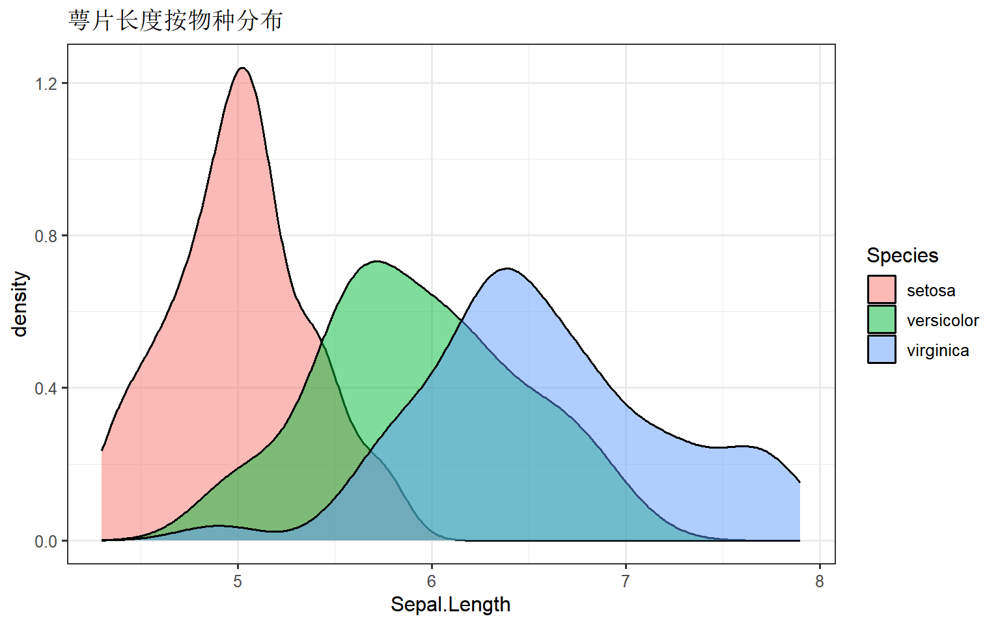
# 6. 关系探索
ggplot(iris_df, aes(x = Sepal.Length, y = Petal.Length, color = Species)) +
geom_point(size = 2) +
labs(title = "萼片与花瓣长度的关系")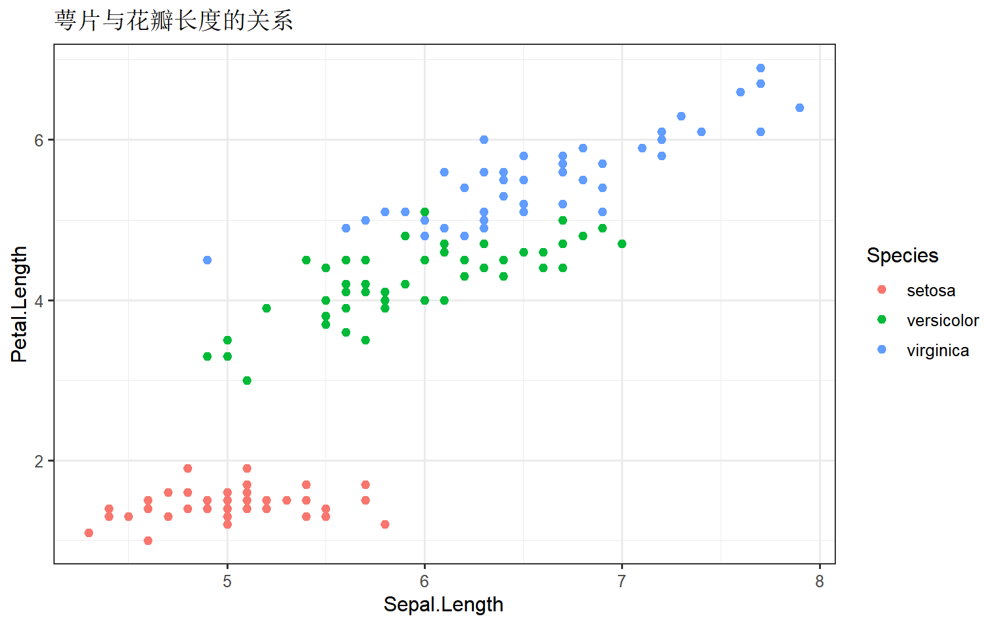
常用代码速查
# 基础检查
dim(df)
str(df)
head(df)
summary(df)
# skimr
skim(df)
# DataExplorer
introduce(df)
plot_intro(df)
plot_missing(df)
plot_histogram(df)
plot_bar(df)
plot_correlation(df)
create_report(df)
# 相关矩阵
cor(df_numeric)
corrplot(cor_matrix, method = "color")
# 异常值
boxplot.stats(x)$out小结
EDA 最佳实践：
- 先概览后细节：从整体到局部
- 数值分类分开：不同类型不同方法
- 可视化优先：图比数字更直观
- 记录发现：为后续分析做准备
提示：EDA 是迭代过程，发现问题后回头清洗数据，再继续探索。